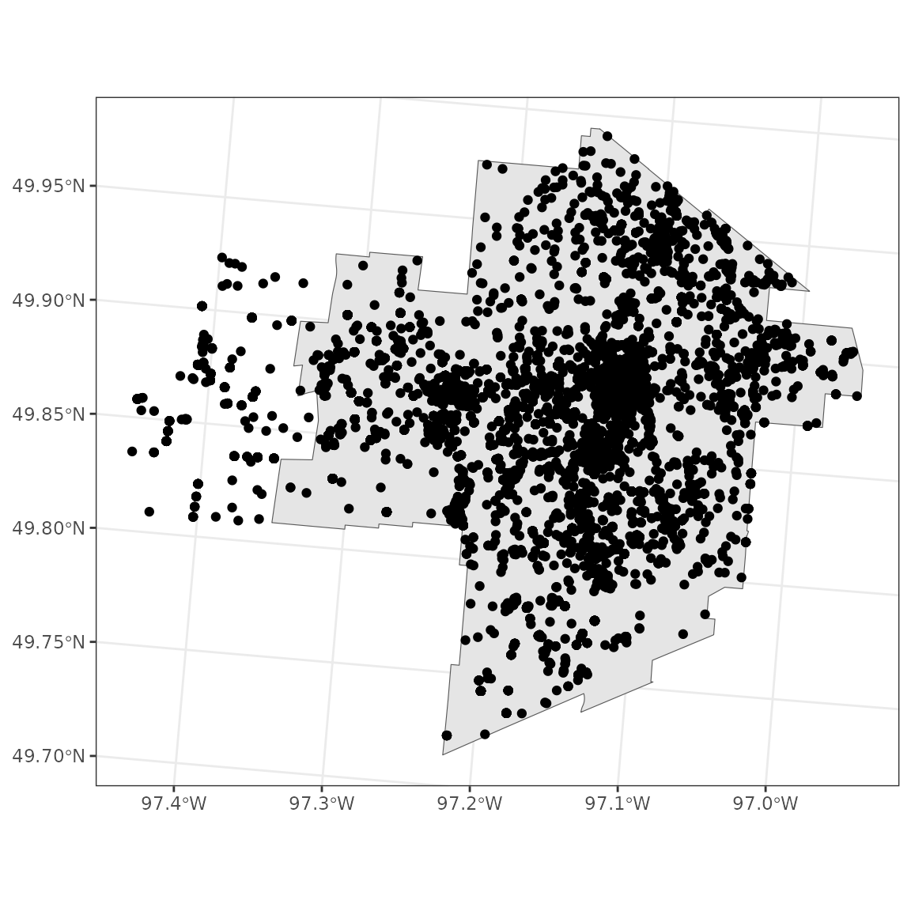
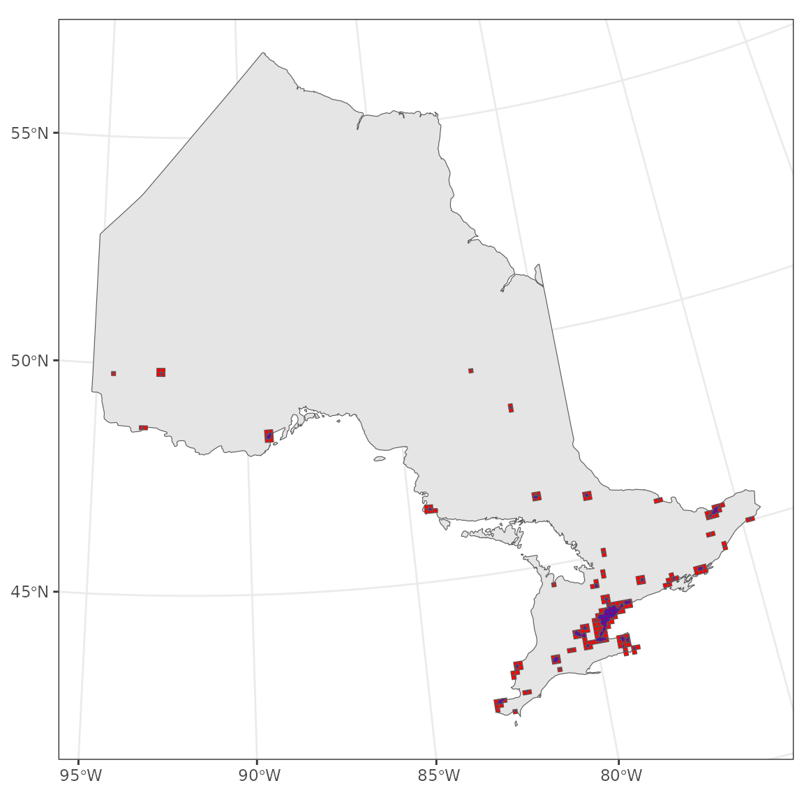
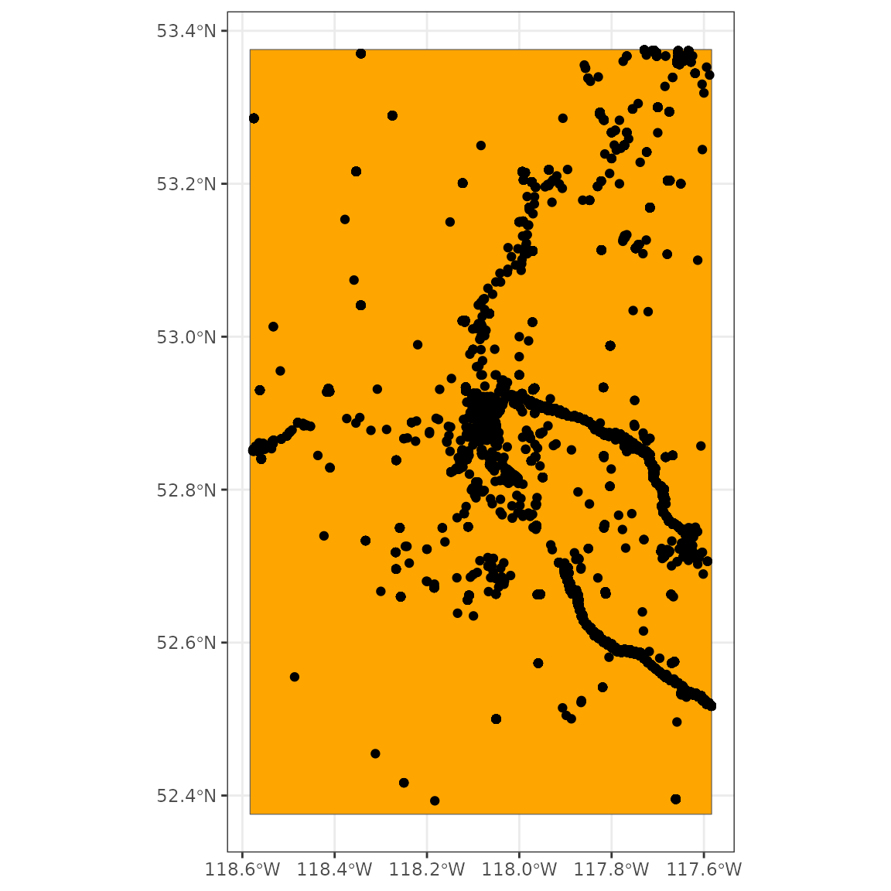

Using spatial data to filter observations
2024-07-31
Source:vignettes/articles/region-spatial.Rmd
region-spatial.RmdIn this article we’ll go over how to use spatial data to more
precisely define regional filters. Often you might be interested only in
observations which fall within a very specific geographic area. While
the nc_data_dl() function cannot take a shapefile as an
argument, you can use regional codes to filter your data, or you can use
shape files to specify either the utm_squares or the
bbox (bounding box) surrounding your area of interest.
After the download, you can then trip the resulting observations to your
original shape file.
The following examples use the “testuser” user which is not available to you. You can quickly sign up for a free account of your own to access and play around with these examples. Simply replace
testuserwith your own username.
Setup
We’ll be using the tidyverse packages
dplyr and ggplot2 for data manipulation and
plotting, respectively. We’ll use the gridExtra to combine
figures. We’ll use the sf package for working with spatial
data, and the rnaturalearth package to get example spatial
data.
library(naturecounts)
library(dplyr)
library(ggplot2)
library(patchwork)
library(sf)
library(rnaturalearth)If you have your own spatial data files that you would like to read
into R, we recommend reading the Reading, Writing
and Converting Simple Features Vignette from the sf website.
First we’ll get some spatial objects for our explorations from the
rnaturalearth package. A map of Canada and a map of
Ontario, both transformed from CRS 4326 (unprojected lat/lon) to 3347
(NAD83 Statistics Canada).
na <- ne_countries(continent = "north america", returnclass = "sf") |>
st_transform(3347)
canada <- ne_states(country = "canada", returnclass = "sf") |>
st_transform(3347)
ontario <- ne_states(country = "Canada", returnclass = "sf") |>
filter(name == "Ontario") |>
st_transform(3347)
manitoba <- ne_states(country = "Canada", returnclass = "sf") |>
filter(name == "Manitoba") |>
st_transform(3347)
ggplot() +
theme_bw() +
geom_sf(data = canada) + # Map of Canada
geom_sf(data = ontario, fill = "orange") # Map of OntarioAlternatively specify the groups inside ggplot()
By Province/State
For example, if you wanted to collect all public observations in Winnipeg, Manitoba…
search_region("winnipeg", type = "subnational2")## # A tibble: 1 × 5
## country_code statprov_code subnational2_code subnational2_name ebird_code
## <chr> <chr> <chr> <chr> <chr>
## 1 CA MB CA.MB.11 Division No. 11 - Winnipeg Capital Region CA-MB-EL
obs <- nc_data_dl(region = list(subnational2 = "CA.MB.11"),
verbose = FALSE, username = "testuser", info = "nc_vignette")Now we’ll get a polygon representing Winnipeg, MB.
winnipeg <- st_read("https://data.winnipeg.ca/resource/2nyq-f444.geojson") |>
st_transform(3347)## Reading layer `2nyq-f444' from data source `https://data.winnipeg.ca/resource/2nyq-f444.geojson' using driver `GeoJSON'
## Simple feature collection with 1 feature and 1 field
## Geometry type: MULTIPOLYGON
## Dimension: XY
## Bounding box: xmin: -97.34915 ymin: 49.71356 xmax: -96.95653 ymax: 49.99401
## Geodetic CRS: WGS 84
obs_sf <- st_as_sf(obs, coords = c("longitude", "latitude"), crs = 4326) |>
st_transform(3347)
ggplot() +
theme_bw() +
geom_sf(data = winnipeg) +
geom_sf(data = obs_sf)
Looks like our polygon of Winnipeg doesn’t exactly match the subnational2 area. That’s okay, we’ll filter to match the polygon:
By UTM Squares
In the following example, let’s assume that you wish to concentrate only on observations from urban areas in Ontario, Canada.
We’ll download that data with the rnaturalearth package
and save it to the working directory (“.”)
ne_download(scale = 10, type = "urban_areas", returnclass = "sf",
destdir = ".", load = FALSE) ## [1] "ne_10m_urban_areas"Now that we’ve saved it, we can load it for use.
urban <- ne_load(scale = 10, type = "urban_areas", returnclass = "sf",
destdir = ".")## Reading layer `ne_10m_urban_areas' from data source
## `/tmp/RtmpNFEnPV/vignettes/region-spatial_files/ne_10m_urban_areas.shp' using driver `ESRI Shapefile'
## Simple feature collection with 11878 features and 4 fields
## Geometry type: POLYGON
## Dimension: XY
## Bounding box: xmin: -157.9912 ymin: -51.05304 xmax: 178.0338 ymax: 69.76986
## Geodetic CRS: WGS 84First we’ll transform it to the 3347 CRS and clip the urban areas to
match the borders of Ontario
(st_insection(spatial1, spatial2)). Here we only care about
the geometry of Ontario, not any other data
(st_geometry(ontario)).
urban_ontario <- urban |>
st_transform(3347) |>
st_intersection(st_geometry(ontario))## Warning: attribute variables are assumed to be spatially constant throughout all geometriesNow to filter your observations to urban areas, the first step would
be to get all the UTM squares which overlap these areas. We can do this
collecting the UTM squares with meta_utm_squares() and then
filtering these to include only those that overlap these urban
areas.
utm_on <- meta_utm_squares() |>
filter(statprov_code == "ON") |>
st_transform(3347) |> # Transform to match urban CRS
st_filter(urban_ontario)
ggplot() +
theme_bw() +
geom_sf(data = ontario) +
geom_sf(data = utm_on, fill = "red") +
geom_sf(data = urban_ontario, fill = "blue", alpha = 0.5)
It’s a bit tricky to see exactly what’s going on, so let’s zoom in a bit.
However, it’s also a bit tricky to zoom when we’re using a non-lat/lon CRS because the units are unintuitive. So let’s specify the limits we want, then transform them in the CRS we’re using and use that to set our limits.
zoom <- data.frame(lon = c(-81, -78, -81, -78),
lat = c(43, 43, 45, 45)) |>
st_as_sf(coords = c("lon", "lat"), crs = 4326) |>
st_transform(3347) |>
st_bbox()
zoom## xmin ymin xmax ymax
## 7067507.7 830951.5 7352759.4 1101350.3For convenience, we’ll use the patchwork package to combine the figures side-by-side so we can get a really good look at what we’re doing.
g1 <- ggplot() +
theme_bw() +
geom_sf(data = ontario) +
geom_sf(data = urban_ontario, fill = "blue", alpha = 0.5) +
coord_sf(xlim = zoom[c(1,3)], ylim = zoom[c(2,4)])
g2 <- ggplot() +
theme_bw() +
geom_sf(data = ontario) +
geom_sf(data = utm_on, fill = "red", alpha = 0.5) +
geom_sf(data = urban_ontario, fill = "blue", alpha = 0.5) +
coord_sf(xlim = zoom[c(1,3)], ylim = zoom[c(2,4)])
g1 + g2So now we can see that the utm_squares we’ve selected
overlap all our urban areas. Now we can download the observations for
all of these areas. Because it can take time for the server to process
so many utm_squares, we’ll increase the timeout to 5
minutes and will only download a couple of utm squares.
obs <- nc_data_dl(region = list(utm_squares = utm_on$utm_square[1:10]),
verbose = FALSE, username = "testuser", timeout = 300,
info = "nc_vignette")Finally, we do clip the resulting observations to the exact urban areas:
obs_sf <- st_as_sf(obs, coords = c("longitude", "latitude"), crs = 4326) |>
st_transform(crs = 3347) |>
st_join(distinct(urban_ontario), left = FALSE)
ggplot() +
theme_bw() +
geom_sf(data = ontario) +
geom_sf(data = urban_ontario, fill = "blue", alpha = 0.5) +
geom_sf(data = obs_sf, size = 1) +
coord_sf(xlim = zoom[c(1,3)], ylim = zoom[c(2,4)])However, sending large lists of UTM squares can be slow, so consider using a bounding box and filtering your downloaded data after the fact.
By Bounding Box
In this example, we’ll gather all observations around Jasper in Alberta.
First we’ll define the area we want to grab. Jasper is at about 52.8755, -118.0833, and we want to get a bout a lat and lon around that.
jasper <- st_bbox(c(xmin = -118.0833 - 0.5,
xmax = -118.0833 + 0.5,
ymin = 52.8755 - 0.5,
ymax = 52.8755 + 0.5),
crs = 4326)Now we’ll get a background map of Alberta.
Let’s see what that all looks like.
ggplot() +
theme_bw() +
geom_sf(data = alberta) +
geom_sf(data = st_as_sfc(jasper), fill = "orange")Now we can give our coordinates directly to our
nc_data_dl() function.
obs <- nc_data_dl(region = list(bbox = jasper), verbose = FALSE, username = "testuser",
info = "nc_vignette")Let’s take a look…
ggplot() +
theme_bw() +
geom_sf(data = st_as_sfc(jasper), fill = "orange") +
geom_sf(data = st_as_sf(obs, coords = c("longitude", "latitude"), crs = 4326))